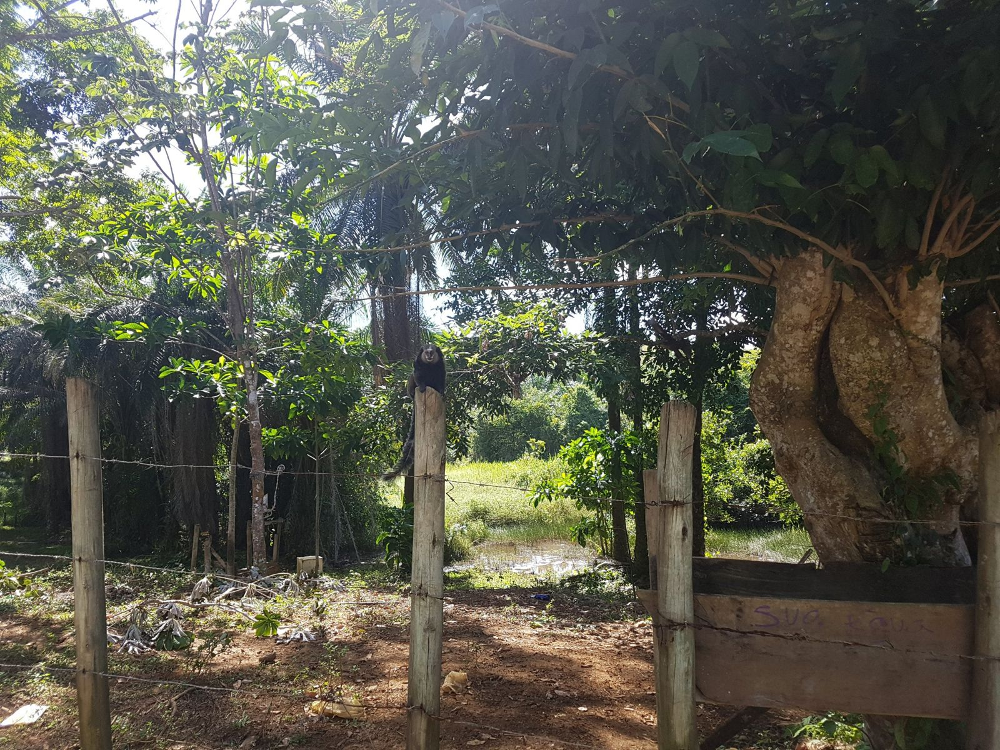
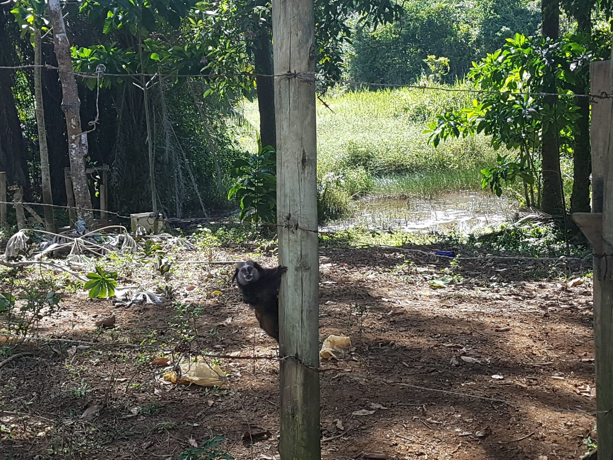
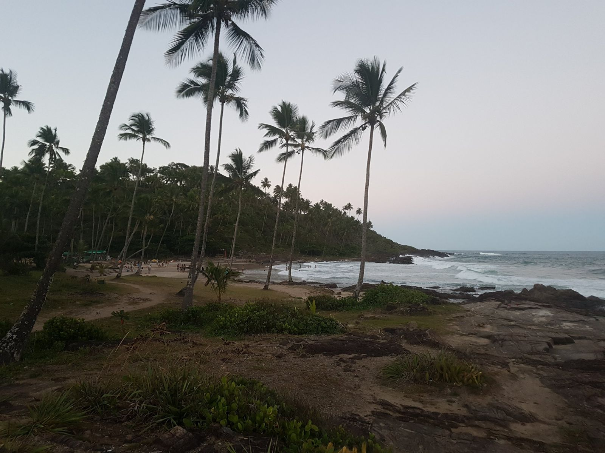
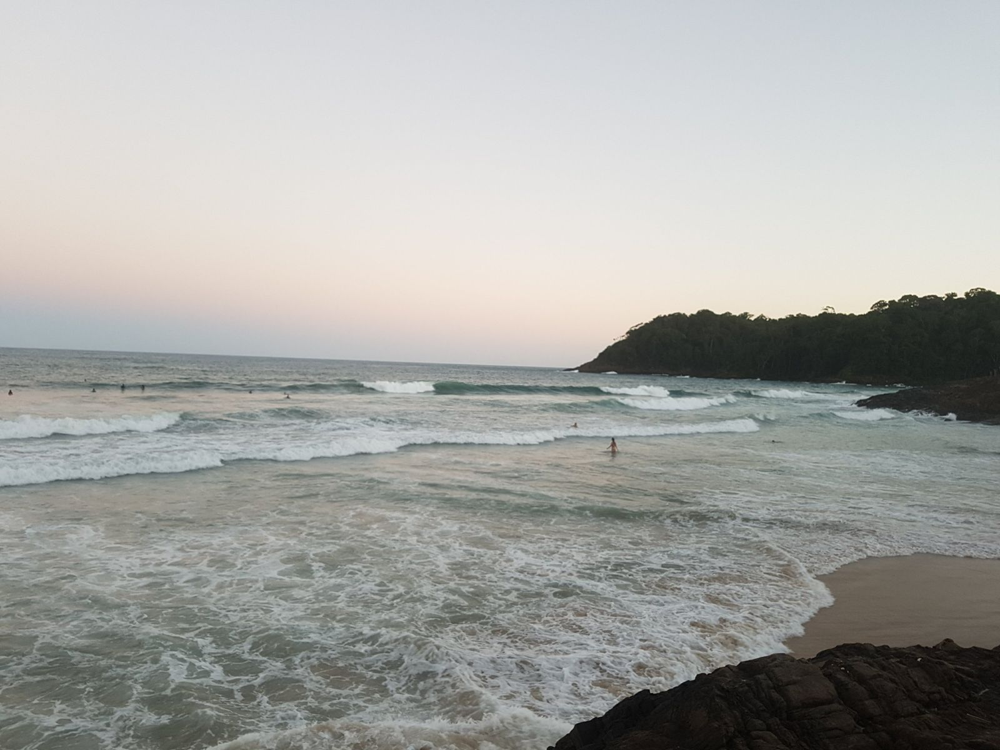
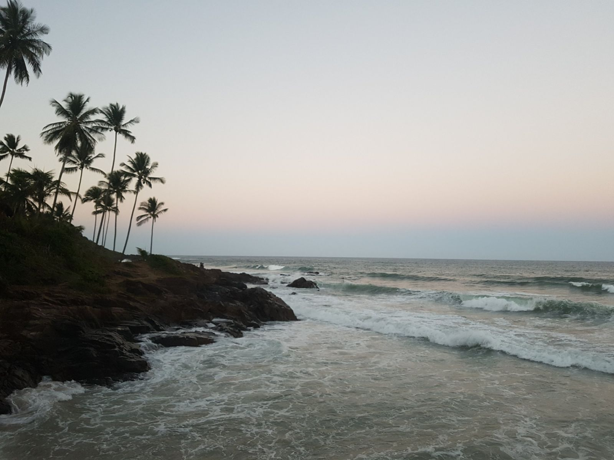
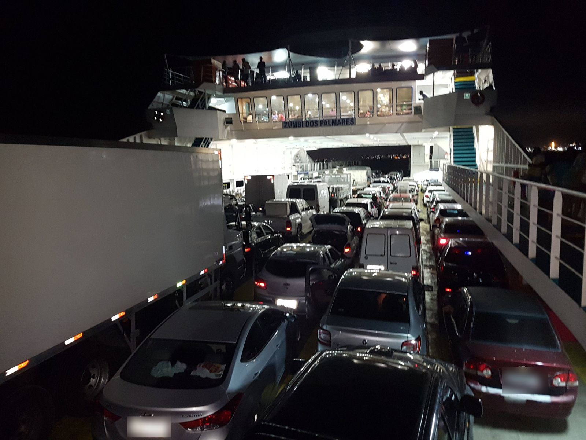

South America · Brazil · Bahia
Itacaré, January 2018
This chapter starts after Morro de São Paulo. I arrived in Itacaré, a surf town on the coast of Bahia, and stayed in a shared apartment with three other travelers. I have seven photos from January 20: dusk on a beach where I rented a board and surfed, and a small monkey that I met on the way there. I also have a video of a street guitarist from January 21, and one photo from January 23 of the car ferry that took me out of the area.
My conclusion up front: Itacaré is a place to surf if you already know how, and the waves I photographed were not gentle. I had surfed before, and I remember the waves were hard, as they look in the pictures. I rented a board, I do not remember the price, and the written sources I found disagree on it by more than three times, so check it before you rent.
About the times: the file names of my photos show my phone's clock, and Google Photos shows a time one hour later (GMT-3). As in the previous chapter, the light fits the phone's clock: the beach photos have the file time 18:14 to 18:16, and they are already in the soft light after sunset. So the times here are the phone's clock.
The days before this chapter are in the Brazil chapter on Morro de São Paulo.
Getting here and where I slept
I do not remember how I got from Morro de São Paulo to Itacaré, and I am not sure that the boat in the last photo of the previous chapter is the one that brought me. The research on the possible routes is in that chapter. I did not take a photo of anything on the way, and the first photo I have from Itacaré is from January 20, so I arrived on January 19 or 20, as I think.
I slept in an apartment of the kind that you book through Airbnb, together with three other travelers. I do not remember the street, the price, the number of nights or who the other three were, and I do not show the apartment or the people.
The monkey on the way to the beach
At 14:22, on the way to the beach, a small monkey was sitting on a fence post next to the path. I took three photos, and in the second it climbed down and looked at me from behind the post. I do not know what kind of monkey it was. It looks to me like a marmoset, but I am not sure. I do not remember the path, how far it was from the beach or from the apartment, and Google Photos gives only Bahia for this photo, so I cannot tell where it was.


The beach and the surf
The rest of the photos are from the evening, 18:14 to 18:16. Google Photos places the one I checked in Itacaré, right at the water's edge by Praia do Resende, south of the centre of town. I do not remember the name of the beach where I surfed, and the pin is on the coast and not on a particular beach, so I do not say that it was Resende. In the first photo you can see a beach with tall palms and, far from the camera, a few people on the sand.

I rented a surfboard. I had surfed before, and I remember that the waves were hard for a beginner, as the next photo shows: sets of long waves breaking one behind the other, with surfers and a swimmer in the water, a rocky point at the right and a forested headland behind it. I do not remember how long I was in the water, what I paid for the board, or if I surfed at this hour or earlier in the day. The photos are from dusk, so I may have taken them after I came out.


What I found: sources that differ a lot. A blog post, No Maps or Foot Tracks, written in April 2026, says boards cost R$50 an hour at both Engenhoca and Tiririca beaches. It calls Tiririca a spot for more advanced surfers, about a 15-minute walk from town, and Engenhoca the best beach for beginners, about 30 minutes by bus from town (nomapsorfoottracks.com). A travel blog, Mala de Aventuras, updated on May 20, 2022, says that the Brother's Surf School on Tiririca charged R$15 an hour or R$40 for the whole day (maladeaventuras.com). A guide of Melhores Destinos, last modified on November 21, 2026, says that boards can be rented at Tiririca, that its waves are good all year and that the sea there is only for beginners on very calm days (guia.melhoresdestinos.com.br).
What I did not find: what I paid in 2018, the shop I rented from, or a current price list from a rental shop or surf school. The two prices come from two different blogs, four years apart, and I could not confirm either. I also did not find which beach in my photos is which.
January 21: a guitarist in the street
On the evening of January 21, at 20:27 by the phone's clock, I filmed a man playing an electric guitar on the pavement of a main street in Itacaré, with a small amplifier and a pedal next to him. I was there with one person from the apartment, and that person gave him a tip. I did not. I remember that I did not stay long, but the video is 5 minutes and 38 seconds long, so I stayed at least that long.
I do not show the video, and I do not describe the man. He did not agree to be filmed for a page like this, and the music is his. Google Photos puts the video in Itacaré, at a point in the centre of the town, north of Praia do Resende, but it shows no street name, and I do not remember the name of the street.
January 22
I have no photo and no video from January 22. I do not remember what I did that day, or if I was still in Itacaré.
January 23: the ferry at night
I remember that leaving Itacaré needed a ferry. The photo below is from January 23, at 21:27 by the phone's clock (Google Photos shows 22:27), and Google Photos places it in Salvador. It shows the car deck of a ferry full of cars and a large truck, with a passenger deck above, and the name Zumbi dos Palmares on the front of the upper deck. I blurred two licence plates that were readable.
I think this is the ferry I remembered. The sources below say that a ferry with this name runs between the São Joaquim terminal in Salvador and the Bom Despacho terminal on the island of Itaparica. I do not know in which direction I crossed, how I got from Itacaré to the ferry, what I paid, or how long I waited.

What I found: an article in Correio from August 12, 2026 says that the ferry connects the São Joaquim terminal in Salvador and Bom Despacho on Itaparica, that it runs Monday to Saturday from 5:00 to 23:30 and on Sundays and holidays from 6:00 to 23:30, and that drivers of passenger vehicles can book on the website of the operator, Internacional Travessias Salvador, with tickets on sale 30 days ahead (correio24horas.com.br). A Tarde, on December 29, 2023, lists Zumbi dos Palmares among the five ferries that ran on that route, with hourly departures from 5:00 to 23:30 in the end-of-year schedule (atarde.com.br). A notice of the Bahia government from October 2026 lists it again among the ferries in service (ba.gov.br).
What I did not find: the fares for people and cars, the schedule in January 2018, and a source that says if this ferry had the same name in 2018. The photo shows the name, which is why I think it is this one. I also did not find a bus or a taxi route from Itacaré to the ferry.
What I do not remember
I do not remember the day I arrived in Itacaré, how I got from Morro de São Paulo, the address and price of the apartment, or who the other three travelers were. I do not remember the beach where I surfed, where I rented the board, what I paid, or how long I surfed. I do not remember where the monkey was. I do not remember how I got from Itacaré to the ferry on January 23, which direction I crossed, what I paid, or what I did on January 22. I have no photos of the town, of food or of the apartment, and I did not write anything down.